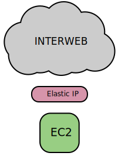
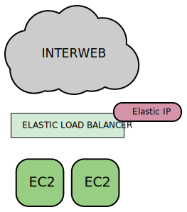
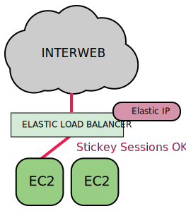
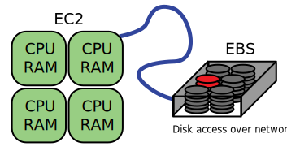
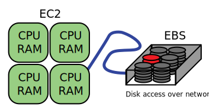
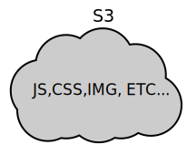
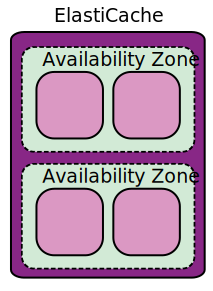
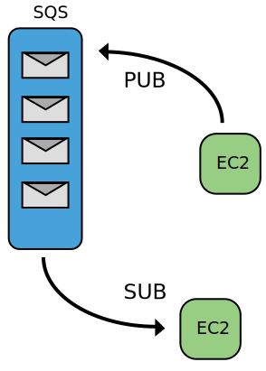

Architecting
ColdFusion
Applications
with AWS
Created by Aaron Greenlee / @aarongreenlee
Thank you to the organizers and sponsors!
- Adobe
- Railo
- Mura
- Hostek
- Integral
- Razuna
- ten24 Digital Solutions
- Vivio Technologies
- conBOP
And... Thank You!
Thanks for attending this session.
I'm honored to be here with you.
Shout Out
- Todd Rafferty
@webrat
- James Brown
@ibjhb

- Joe Fusco
@jfusco
Adobe TV
- Millions of Unique Visitors a Month
- Average 10k requests a second (not counting CDN or Streaming)
- Goal is 250ms or less per request
- Wrecking Ball created and launched:
- Version Two (2009)
- Version Three (2011)
- Two full time developers
Adobe Education Exchange
- Started Discovery August 12, 2012
- Launched February 13, 2013
- 83,000 Members
- 4,450 Educational Resources
- 250 Discussions
- Two full time developers
Who is this Aaron Greenlee?
- Tampa, Florida
- Director of Development @ Wrecking Ball Media
- CFML; JavaScript (Client/Node); GoLang; Ruby
Show of Hands
- Played around with AWS?
- Running a production app in AWS?
What is AWS?
Amazon Web Services (abbreviated AWS) is a collection of remote computing services (also called web services) that together make up a cloud computing platform, offered over the Internet by Amazon.com. The most central and well-known of these services are Amazon EC2 and Amazon S3. The service is advertised as providing a large computing capacity (potentially many servers) much faster and cheaper than building a physical server farm.
- Wikipedia
Where is AWS?
AWS' mapServices We'll Discuss
- Amazon Elastic Compute Cloud (EC2)
- S3
- SimpleDB
- DynamoDB
- RDS (MySQL, Oracle, MSSQL)
- ElastiCache
- Elastic Beanstalk
- SQS
Amazon Elastic Compute Cloud (EC2)
What is an EC2
Amazon Elastic Compute Cloud (Amazon EC2) is a web service that provides resizable compute capacity in the cloud. It is designed to make web-scale computing easier for developers.- AWS
EC2 First Steps
- ColdFusion 10 AMI ("Amazon Machine Image")
- Railo AMI
-
Create your own AMI
- Start with your OS
- Install your software (Apache? Nginx? Tomcat? ColdFusion?)
EC2 First Steps
Highly Available
Highly Available
Elastic Block Storage (EBS)
Attach EBS to New EC2
S3
Simple Storage Service
What is S3?
Amazon S3 is storage for the Internet. It’s a simple storage service that offers software developers a highly-scalable, reliable, and low-latency data storage infrastructure at very low costs.- AWS
What is S3?
Your own "Content Delivery Network (CDN)"
What can you do with S3?
- Serve files like CSS, JS, Images, etc...
- Cheap file storage and archive (Glacier)
- Stream videos directly to clients (Flash and/or HTML5)
- Serve an entire static site
- Point Domain
- Store HTML, JS, CSS, IMGs
- GO!
ColdFusion Loves S3!
Just use a file path like so:
s3://accessKeyId:awsSecretKey@bucket/x/y/sample.txt
Simple DB
Simple database
What is Simple DB?
Amazon SimpleDB is a highly available, flexible, and scalable non-relational data store that offloads the work of database administration. It provides the core database functions of data indexing and querying in the cloud.- AWS
What can you do with Simple DB?
- Send small messages to a single-table datastore (logging, transactions, etc..)
- Quickly sync data across the globe.
Simple DB Limitations?
- Not a relational database
- Max 10gb per domain
- Max One Billion records per domain
- Keys can't exceed 1024 bytes
- Values can't exceed 1024 bytes
Dynamo DB
High-performance NoSQL
What is Dynamo DB?
Amazon DynamoDB is a fully managed NoSQL database service that provides fast and predictable performance with seamless scalability. Amazon DynamoDB enables customers to offload the administrative burdens of operating and scaling distributed databases to AWS, so they don’t have to worry about hardware provisioning, setup and configuration, replication, software patching, or cluster scaling.- AWS
What can you do with Dynamo DB?
- Store objects in a fast, consistent NoSQL database
Dynamo DB Limitations?
- Not a relational database
- Keys can't exceed 255 characters or 255 bytes
- Values/Attributes can't exceed 64kb
- You need to configure your throughput
- Read more...
RDS
Relational Database Service
What is RDS?
Amazon Relational Database Service (Amazon RDS) is a web service that makes it easy to set up, operate, and scale a relational database in the cloud. It provides cost-efficient and resizable capacity, while managing time-consuming database administration tasks, freeing you up to focus on your applications and business.- AWS
What databases are supported?
- MySQL
- Oracle
- Microsoft SQL Server
ElastiCache
Distributed Cache
What is ElastiCache?
Amazon ElastiCache is a web service that makes it easy to deploy, operate, and scale an in-memory cache in the cloud.- AWS
Distributed Memcached!
SQS
Simple Queue Service
What is SQS?
Amazon Simple Queue Service (Amazon SQS) offers a reliable, highly scalable hosted queue for storing messages as they travel between computers. By using Amazon SQS, developers can simply move data between distributed application components performing different tasks, without losing messages or requiring each component to be always available.- AWS
Safe Pub + Sub!
Elastic Beanstalk
Platform as a service
What is Elastic Beanstalk?
AWS Elastic Beanstalk makes it even easier for developers to quickly deploy and manage applications in the AWS cloud. Developers simply upload their application, and Elastic Beanstalk automatically handles the deployment details of capacity provisioning, load balancing, auto-scaling, and application health monitoring.- AWS